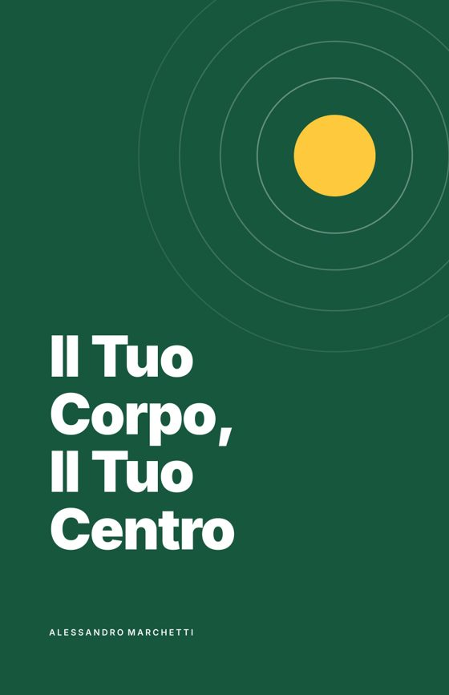
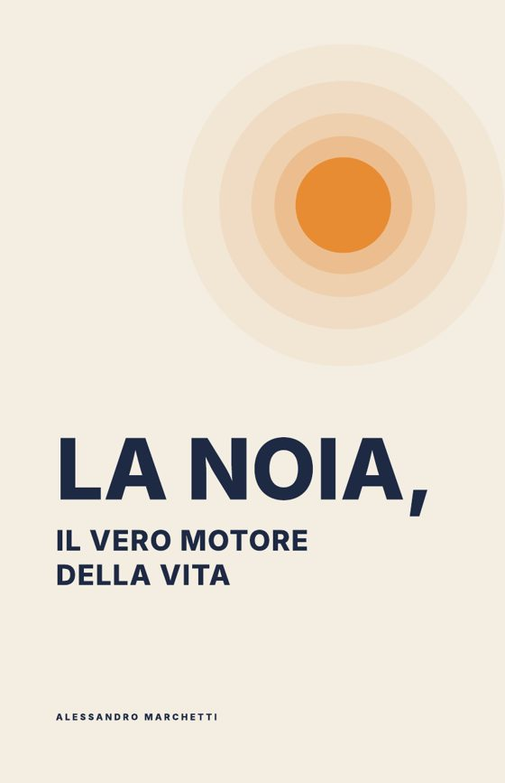

Ritrova l'equilibrio tra corpo, mente e natura.
NaturalPlan è un percorso di benessere che unisce Pilates, meditazione, tecniche di rilassamento e rimedi naturali. Pratiche semplici, guidate, da portare nella tua vita di tutti i giorni.
Un unico posto per prenderti cura di te
Contenuti gratuiti, lezioni guidate e letture per accompagnarti passo dopo passo.
Metodi di rilassamento
Respirazione, rilassamento muscolare progressivo, body scan: tecniche pratiche per sciogliere tensione e stress.
Meditazioni guidate
Pratiche da 5 a 20 minuti per iniziare la giornata, ritrovare la calma o prepararti al sonno.
Esercizi di Pilates
Sequenze per tutti i livelli, dal core ai fondamentali, spiegate da un istruttore certificato PowerPilates.
I miei libri
"Il tuo corpo, il tuo centro" e "La noia, il vero motore della vita": due percorsi pratici per il corpo e per la mente.
Blog rimedi naturali
Articoli su erbe, tisane, alimentazione consapevole e abitudini naturali per il benessere quotidiano.
Il Centro NaturalPlan
Yoga, massaggi, trattamenti, nutrizione, eventi culturali: le discipline del centro olistico che sta nascendo.
"Il benessere non è una meta da raggiungere, ma un modo di camminare ogni giorno."— NATURALPLAN
Alessandro Marchetti
Sono un istruttore di Pilates certificato PowerPilates (New York) e autore di due libri sul benessere interiore e sulla consapevolezza del corpo.
Ho creato NaturalPlan con un'idea semplice: rendere il benessere olistico accessibile a tutti, unendo il rigore del movimento con la calma della meditazione e la saggezza dei rimedi naturali. Un progetto che cresce passo dopo passo, come ogni buona pratica.
PowerPilates
Certificazione New York
2
Libri pubblicati
Online
Lezioni individuali e di gruppo
8+
Discipline in arrivo
Ultimi articoli
Sciogli la tensione, respira la calma
Tecniche semplici e collaudate che puoi praticare ovunque: a casa, in ufficio, prima di dormire. Inizia con lo strumento di respirazione guidata qui sotto.
Respirazione guidata
Scegli una tecnica, premi "Inizia" e segui il cerchio: si espande quando inspiri, si contrae quando espiri.
Cinque metodi da conoscere
Rilassamento muscolare progressivo
Il metodo di Jacobson: contrai e rilascia i gruppi muscolari uno alla volta per imparare a riconoscere e sciogliere la tensione.
- Sdraiati comodo e chiudi gli occhi.
- Contrai i piedi per 5 secondi, poi rilascia per 15.
- Sali: polpacci, cosce, glutei, addome, mani, braccia, spalle, viso.
- Concludi con 3 respiri profondi, sentendo tutto il corpo morbido.
Body scan
Una scansione lenta e attenta del corpo, dalla testa ai piedi, senza giudicare le sensazioni.
- Porta l'attenzione alla sommità del capo.
- Scendi lentamente: fronte, mascella, collo, spalle.
- Nota calore, peso, formicolii, tensioni. Respira lì.
- Arriva fino alle punte dei piedi, poi osserva il corpo intero.
Respirazione diaframmatica
La base di tutto: respirare con la pancia attiva il sistema nervoso parasimpatico, quello del "riposo".
- Una mano sul petto, una sull'addome.
- Inspira dal naso: si solleva solo la mano sull'addome.
- Espira lentamente dalla bocca, più a lungo dell'inspiro.
- Ripeti per 10 respiri.
Grounding 5-4-3-2-1
Utile nei momenti di agitazione: riporta la mente al presente attraverso i sensi.
- Nomina 5 cose che vedi.
- 4 cose che puoi toccare.
- 3 suoni che senti.
- 2 profumi e 1 sapore.
Rituale di decompressione prima del sonno
Spegni gli schermi 45 minuti prima di dormire, abbassa le luci, prepara una tisana calda (camomilla, melissa o tiglio), fai 5 minuti di allungamento dolce e chiudi con 10 cicli di respirazione 4-7-8. La costanza conta più della durata: ripetuto ogni sera, il corpo impara ad associare questi gesti al riposo.
Fermati. Osserva. Respira.
Pratiche brevi per ogni momento della giornata. Imposta il timer, leggi le istruzioni e lasciati guidare.
Timer di meditazione
Scegli la durata e medita in silenzio. Un suono dolce ti avviserà alla fine.
Forza dal centro, leggerezza nel movimento
Esercizi a corpo libero del metodo Pilates, selezionati e spiegati da un istruttore certificato PowerPilates. Esegui ogni movimento con controllo, coordinandolo al respiro.
Le basi del metodo Pilates
Centratura
Ogni movimento parte dal "powerhouse": addome, lombari, glutei e pavimento pelvico.
Concentrazione
La mente guida il corpo: presenza totale su ciò che stai facendo.
Controllo
Nessun movimento è lasciato al caso o allo slancio.
Precisione
Meglio poche ripetizioni perfette che tante eseguite male.
Respirazione
Respiro laterale toracico, coordinato con ogni fase del movimento.
Fluidità
Movimenti continui e armoniosi, senza scatti.
Vuoi un programma su misura?
Lezioni individuali online, adattate al tuo livello e ai tuoi obiettivi.

Il tuo corpo, il tuo centro
20 giorni, 20 esercizi di movimento, respiro e meditazione che diventano una sequenza da 30 minuti.
Letture da vivere, non solo da leggere
Due percorsi pratici, con esercizi passo dopo passo: uno per tornare ad abitare il corpo, uno per ridare spazio alla mente.
Il tuo corpo, il tuo centro
Viviamo dal collo in su e ci ricordiamo del corpo solo quando qualcosa si rompe. Questo libro ti riporta dentro: venti giorni, venti esercizi da due minuti, che si sommano giorno dopo giorno fino a diventare una sequenza completa da mezz'ora, dalla posizione seduta a quella in piedi, poi a terra e di nuovo seduti.
- Le fondamenta: osservare il corpo, respirare con il diaframma, radicarsi a terra.
- I sette centri, dalla radice alla corona, usati come mappa per orientare l'attenzione e sempre collegati a ciò che il corpo fa davvero: respiro, postura, sistema nervoso.
- La sequenza completa in versione da 30 e da 15 minuti, con varianti per il mattino e la sera.
- Errori comuni, glossario e il diario dei 20 giorni da compilare.
"Il tuo corpo è il tuo centro. Torna a casa ogni volta che puoi."

La noia, il vero motore della vita
Ogni attesa, ogni vuoto, lo riempiamo con il telefono. E se il problema fosse proprio questo? Quasi tutto ciò che di nuovo hai pensato è arrivato quando non stavi cercando: sotto la doccia, guidando, fissando il soffitto. Questo libro mostra come trasformare la noia da nemico a motore, distinguendo la noia passiva che svuota da quella consapevole che genera idee.
- Quattro parti: capire la noia, la noia come motore creativo, la noia sul lavoro, vivere con la noia.
- 14 capitoli e 14 esercizi, dai "dieci minuti di niente" al digiuno da stimoli, fino alla lettera da aprire tra un anno.
- Storie concrete di persone comuni, dalla coda all'ufficio postale al magazzino, al forno di quartiere.
- Un capitolo onesto su quando la noia non è un motore, ma un segnale da ascoltare.
"Le idee sono come il vento. Non si possono comandare. Si può solo tenere le vele aperte."
Rimedi naturali e benessere quotidiano
Erbe, tisane, alimentazione e abitudini sane, raccontate in modo semplice. Le informazioni hanno scopo divulgativo e non sostituiscono il parere del medico.
Un centro olistico che cresce con te
NaturalPlan nasce online e diventerà un centro fisico dedicato al benessere a 360°. Queste sono le discipline che lo comporranno.
Pilates
Lezioni individuali e di gruppo, a corpo libero e con piccoli attrezzi.
Disponibile onlineYoga
Hatha e yoga dolce per flessibilità, equilibrio e calma mentale.
In arrivoMeditazione
Percorsi di mindfulness e meditazione guidata, singoli e di gruppo.
In arrivoMassaggi
Massaggi rilassanti e decontratturanti con operatori qualificati.
In arrivoTrattamenti
Trattamenti olistici per il benessere di corpo e mente.
In arrivoNutrizione
Consulenze con professionisti per un'alimentazione equilibrata.
In arrivoOmeopatia
Consulenze con professionisti abilitati del settore.
In arrivoEventi culturali
Workshop, presentazioni di libri, ritiri e incontri a tema.
In arrivoCome sta nascendo NaturalPlan
Presenza digitale
Sito, contenuti gratuiti e lezioni online.
Lo spazio fisico
Apertura della prima sede e nuove discipline.
Offerta completa
Team di professionisti, trattamenti ed eventi.
Accademia
Formazione online e nuove sedi.
Parliamone
Vuoi prenotare una lezione di Pilates online, avere informazioni sui libri o sul centro? Scrivimi.
Scrivimi una mail
Lezioni di Pilates online, copie autografate dei libri, informazioni sul centro o collaborazioni: premi il pulsante e si aprirà il tuo programma di posta.
✉ ContattamiOppure scrivi direttamente a info@naturalplan.it
Per cosa puoi scrivermi
Individuali o in piccoli gruppi, adattate al tuo livello.
Informazioni su "Il tuo corpo, il tuo centro" e "La noia, il vero motore della vita".
Professionisti del benessere, eventi, progetti condivisi.
Privacy e Cookie Policy
Informativa ai sensi degli artt. 13 e 14 del Regolamento (UE) 2016/679 (GDPR). Ultimo aggiornamento: 17 novembre 2026.
1. Titolare del trattamento
Alessandro Marchetti – NaturalPlan. Contatto: info@naturalplan.it
2. Dati trattati e finalità
Dati di navigazione
Il sito è ospitato su GitHub Pages (GitHub, Inc., USA). Come avviene per qualsiasi sito web, i server che lo ospitano registrano automaticamente alcuni dati tecnici, come l'indirizzo IP del visitatore, per garantire il funzionamento e la sicurezza del servizio. Questi dati sono trattati da GitHub secondo la propria informativa e non sono usati da NaturalPlan per identificare gli utenti.
Caratteri tipografici (Google Fonts)
Per visualizzare i caratteri del sito vengono caricati i font Montserrat e Poppins dal servizio Google Fonts (Google LLC, USA). Per inviare i font, Google riceve l'indirizzo IP del visitatore. Google Fonts non imposta cookie.
Dati inviati volontariamente via email
Se ci scrivi a info@naturalplan.it (anche tramite il pulsante "Contattami"), trattiamo il tuo indirizzo email e i dati contenuti nel messaggio al solo scopo di risponderti. La base giuridica è la tua richiesta (art. 6.1.b GDPR). I dati sono conservati per il tempo necessario a gestire la richiesta e non sono ceduti a terzi.
3. Trasferimento di dati fuori dall'UE
GitHub e Google hanno sede negli Stati Uniti. I trasferimenti avvengono sulla base delle garanzie previste dal GDPR, come l'adesione al EU-U.S. Data Privacy Framework e/o le Clausole Contrattuali Standard approvate dalla Commissione Europea.
4. Link esterni
Il sito contiene link ad Amazon per l'acquisto dei libri. Cliccandoli lasci NaturalPlan: da quel momento si applica l'informativa privacy e cookie di Amazon.
5. Cookie Policy
Questo sito non installa cookie, né tecnici né di profilazione, e non utilizza altri strumenti di tracciamento (pixel, analytics, fingerprinting). Gli strumenti interattivi del sito, come la respirazione guidata e il timer di meditazione, funzionano interamente nel tuo browser e non salvano alcun dato.
Per questo motivo non viene mostrato alcun banner di consenso: in base alle Linee guida del Garante Privacy del 10 giugno 2021, il consenso è richiesto solo per cookie e strumenti di tracciamento diversi da quelli tecnici. Se in futuro dovessimo introdurne, questa informativa verrà aggiornata e ti verrà chiesto il consenso prima del loro utilizzo.
6. I tuoi diritti
Puoi esercitare in qualsiasi momento i diritti previsti dagli artt. 15–22 del GDPR: accesso, rettifica, cancellazione, limitazione, opposizione e portabilità dei dati, scrivendo a info@naturalplan.it. Hai inoltre il diritto di proporre reclamo al Garante per la protezione dei dati personali (www.garanteprivacy.it).
7. Modifiche
Questa informativa può essere aggiornata. La data dell'ultimo aggiornamento è indicata in alto.